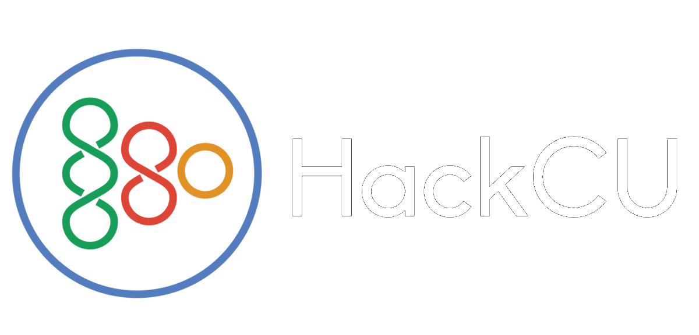

Experience
Software Engineer Intern | SNC
Englewood, COMay 2024 - Aug 2024
Created communications software using TypeScript, React.js and Redux for UI/UX, and Ansible for automated configuration.

Co-Director | HackCU
Boulder, COJul 2023 - Present
We're currently planning HackCU 10, an event where students spend 24 hours straight on developing an engineering related project from scratch. We expect to have hundreds of participants like the years before. I am helping the Director manage the different teams we have, which include:
- Tech: creating and developing the website.
- Marketing: social media posts, posters, etc.
- Finance: acquire funds through school and sponsors, decide on how to spend funds.
- Logistics: general hackathon planning, including the events and workshops that will take place.
AI Research Assistant | CLEAR at CU Boulder
Boulder, COJun 2023 - Present
I am working with PhD student Mary Martin at CU Boulder's CLEAR lab on natural language processing (NLP) research. We are developing a novel method to encode and process spatial relationships of objects in a 3D environment.
One useful application of our work is being able to give instructions in human language to a robot arm to tell it to manipulate objects in the environment. For example, we could tell a robot to "pick up the blue block and put it on top of the red block". The robot needs to be aware of the spatial relationship between the blocks. It also needs to be able to comprehend what "on top of" means. To humans, this seems like a simple task, but to a computer, it is very complicated.

Code Sensei | Code Ninjas
Louisville, COJun 2020 - Aug 2023
I taught kids aged 7-14 basic JavaScript. Kids would learn on the "GDP" (Game Development Platform), making small 2D web games to practice their skills. A kid would advance in belt, like in a martial-arts dojo, when they completed the projects corresponding to that belt. At one time, there could be 10+ kids in the Dojo (computer room), each with their own questions, so I needed to be very efficient with how I spent my time and keep my head on a swivel.
During summer, we also ran summer camps alongside the normal belt program. These camps included:
- Making Minecraft mods with MCreator (much easier than coding them from scratch in Java).
- Roblox Game Development (building, scripting in Lua).
- 3D printing designs made in Tinkercad.